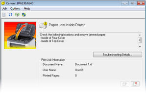
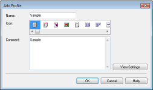
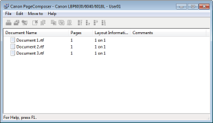

Improving Efficiency
|
|
Remote Management with Printer Status Window and Remote UI
|

|
The Printer Status Window and Remote UI allow you to manage the machine remotely from the computer at your desk. You can monitor the state of the machine from your computer, and also check error information. Whenever a printing error occurs, the Printer Status Window appears automatically to notify you with easy to understand messages and animations. Save time and trouble by eliminating trips between your desk and the machine. The Remote UI makes it simple to configure the machine, including the many network setting items.

For more information about the Printer Status Window, see Printer Status Window.
For more information about the Remote UI, see Using the Remote UI.
 |
Register Favorite Settings and Call Them Up at Any Time
|
|
Everyone in the office uses the printer. If you register the most popular settings as the default settings, you can use them right away. You can also register frequently used combinations of print settings as "profiles." Then you can call up your favorite settings in a single operation, by selecting a profile instead of selecting each setting every time you print.

To change default print settings: Changing Default Settings
To register combinations of frequently used print settings as "profiles": Registering Combinations of Frequently Used Print Settings
 |
Save Time with Shortcuts
|
|
When you have a number of documents to print, it would be convenient to print them all with one operation. Canon PageComposer allows you to combine multiple documents and print them all at once. It is an easy way to save time and work more efficiently.

For more information about this function, see Combining and Printing Multiple Documents.